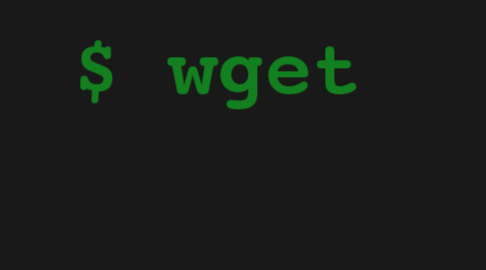

Wget

Overview
Wget is a ground-up clone of the GNU wget command-line utility, written in Go.
I built it to understand how download tools actually work beneath the familiar interface —
what happens when you type a URL into a terminal and a file appears. The answer is more complex
than it looks: HTTP negotiation, I/O streaming, concurrent request management, recursive HTML crawling,
and careful state tracking across a potentially large and cyclic web of resources.
The tool supports single-file downloads, batch downloads from a file list, website mirroring, bandwidth throttling, background execution, and real-time progress output with transfer rates and estimated completion time.
Concurrency & Semaphores
Downloading multiple files simultaneously is where Go's concurrency model earns its reputation. Spinning up a goroutine per download is trivial — but unbounded concurrency is a problem. Hit a server with a hundred simultaneous connections and you'll get rate-limited or banned. Saturate your own network and every download slows to a crawl.
The solution is a semaphore: a buffered channel in Go that acts as a slot pool. Before a download goroutine can start, it must acquire a slot from the channel. When the pool is full, new goroutines block until a running one finishes and releases its slot. This caps active concurrency at a fixed limit regardless of how many downloads are queued — the same pattern used in production HTTP clients, worker pools, and connection managers.
Coordinating progress output across concurrent goroutines required additional synchronisation. Each goroutine writes to its own line in the terminal, and a mutex guards access to the output to prevent interleaved writes from different goroutines mangling the display.
Website Mirroring
Mirror mode — --mirror — was the most architecturally complex feature.
To download a full website, you start at the root URL, download the HTML, parse it to extract
all linked resources (<a>, <link>, <img>,
<script>, CSS url() references), download those, parse any
further HTML you find, and repeat — recursively, until there's nothing new to download.
The key challenge is that the web is a graph, not a tree, and graphs have cycles. Without careful tracking of already-visited URLs, the crawler loops forever. I maintained a concurrent-safe visited set (a map behind a mutex) that's checked before enqueuing any URL. Normalising URLs before lookup — stripping fragments, resolving redirects, canonicalising trailing slashes — prevents the same resource from being downloaded twice under different-looking URLs.
Offline Link Conversion
After mirroring, the downloaded site needs to work offline. That means rewriting every absolute
URL in every HTML and CSS file to point to the corresponding local path instead of the remote server.
A link to https://example.com/assets/style.css in a page saved at
mirror/example.com/index.html needs to become ../assets/style.css
— a relative path computed from the downloaded page's location to the downloaded asset's location.
Getting this right across nested directory structures, protocol-relative URLs, and CSS
url() references required building a proper URL resolution and relativisation
pipeline. An off-by-one in the directory depth calculation produces broken links that are
easy to miss until you open the mirrored site in a browser.
Bandwidth Throttling
The --rate-limit flag caps total download throughput across all concurrent transfers.
Implementing this precisely while maintaining concurrency required something close to a token bucket:
a goroutine that periodically adds tokens (bytes of allowance) to a shared bucket, and a reader
wrapper that consumes tokens as it reads from the HTTP response body, sleeping when the bucket is empty.
The tricky part is distributing the rate limit fairly across concurrent downloads so that no single download monopolises the budget. The implementation divides the configured limit by the number of active downloads and adjusts dynamically as downloads start and finish.
Challenges
Relative URL resolution was the source of the most bugs. A URL like ../../assets/img.png
means something different depending on the path of the page it appears in, and computing the
correct absolute URL requires careful base URL handling. Protocol-relative URLs
(//cdn.example.com/lib.js), anchor-only links (#section),
and data: URIs all need to be identified and excluded from the download queue.
HTTP redirects added another layer. A URL might redirect to a different domain, a different path, or back to a URL already in the visited set. Following redirects correctly while updating the canonical URL in the visited set (so the redirect target isn't downloaded again via a direct link) required careful handling at each step in the redirect chain.
What I Took Away
This project made the internals of tools I use every day concrete. Every HTTP client library, every download manager, every web scraper is solving the same set of problems: concurrency control, URL normalisation, cycle detection, streaming I/O. Understanding those fundamentals makes me a better user of the abstractions that sit on top of them, and a better debugger when they behave unexpectedly.